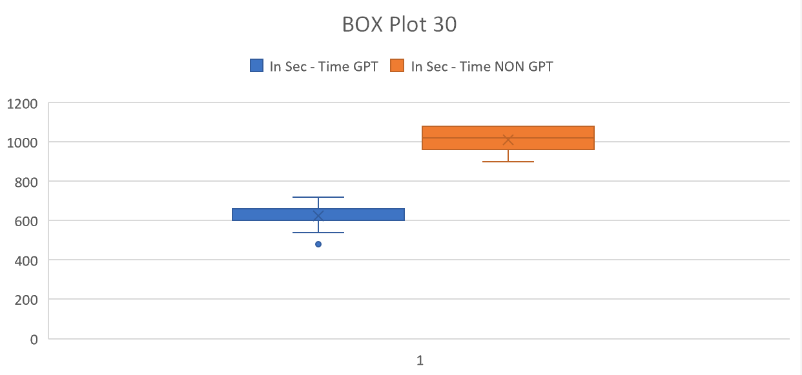
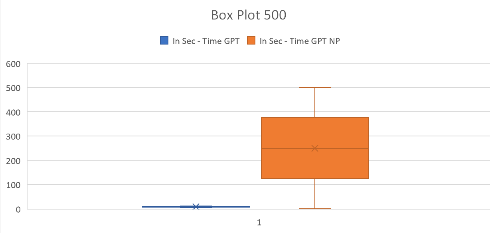
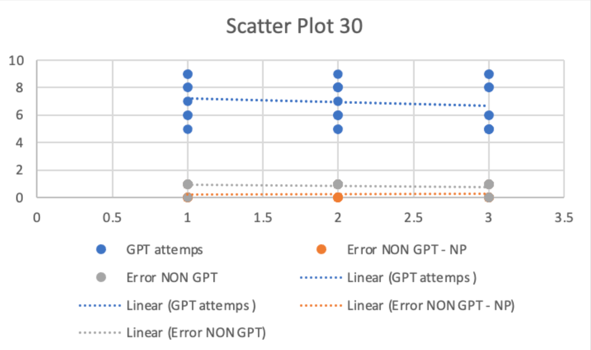
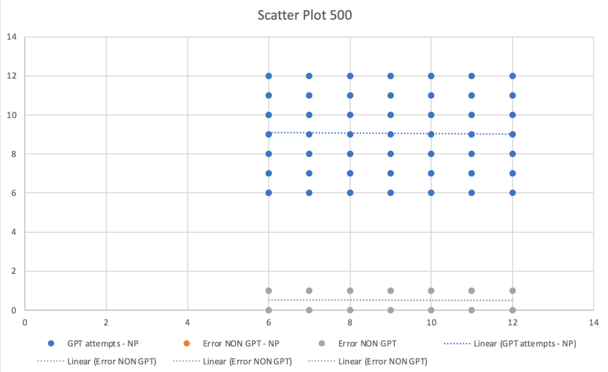

This analysis examines three main graphs that provide insight into the potential benefits of using the GPT method in programming for a user set of 30 Vs 500 users. The data for 30 users was collected using the user testing we performed, based on which we trained a machine learning model on our dataset and generate synthetic data that is statistically equivalent, with the help of Gretel API, a sample set of synthetic data was produced to simulate 500 users. The first graph is a box plot, which shows the consistency and reliability of the GPT and non-GPT methods by referencing the measure of error rates. The data was produced to simulate the test for 500 users. The second graph is a scatter plot, which shows the correlation between the number of attempts and the accuracy of the GPT method.
The box plot compares the time taken for the GPT and non-GPT methods. The box for the GPT method is narrower and lower, indicating that the GPT method takes less time overall. The whiskers for the GPT method are shorter, indicating that the range of times taken is smaller. The median time taken for the GPT method is lower, suggesting that the GPT method is more consistent and reliable than the non-GPT method. However, there is some overlap in the box and whiskers for both methods, indicating that there is some variability in the time taken for both methods.
A box plot was used to compare the time taken for the GPT and non-GPT methods across a sample size of 500 users. The analysis shows that the box for the GPT method is narrower and lower compared to the box for the non-GPT method. This observation implies that the GPT method takes less time overall than the non-GPT method.
Furthermore, the whiskers for the GPT method are shorter, indicating that the range of times taken is smaller for the GPT method. The median time taken for the GPT method is lower, suggesting that the GPT method is more consistent and reliable than the non-GPT method.
However, the box plot also shows that there is some overlap in the box and whiskers for both methods, indicating that there is some variability in the time taken for both methods. This variability may be attributed to factors such as user experience, the complexity of the task, or the specific applicatio
Overall, the analysis suggests that the GPT method may be a more reliable and efficient choice compared to the non-GPT method, given its lower overall time taken, smaller range of times taken, and lower median time taken. However, the overlap in the box and whiskers highlights the need for further analysis and consideration of other factors that may affect the performance of both methods.
The scatter plot shows the relationship between the number of attempts and error rates for the GPT and non-GPT methods. The size of each point represents the time taken. The scatter plot shows that there is a negative relationship between the number of attempts and error rates for both methods, indicating that as the number of attempts increases, the error rates tend to decrease. However, for a given number of attempts, the GPT method tends to have lower error rates than the non-GPT method. This suggests that the GPT method may be more accurate overall. The scatter plot also shows that there is some variability in the time taken for both methods, but overall, the time taken tends to increase as the number of attempts increases.
The scatter plot shows the relationship between the number of attempts and error rates for the GPT and non-GPT methods. The size of each point represents the time taken. The scatter plot shows that there is a negative relationship between the number of attempts and error rates for both methods, indicating that as the number of attempts increases, the error rates tend to decrease. However, for a given number of attempts, the GPT method tends to have lower error rates than the non-GPT method. This suggests that the GPT method may be more accurate overall. The scatter plot also shows that there is some variability in the time taken for both methods, but overall, the time taken tends to increase as the number of attempts increases.
A scatter plot was used to visualize the relationship between the number of attempts, error rates, and time taken for both GPT and non-GPT methods across a sample size of 500 users. The analysis shows that there is a clear negative relationship between the number of attempts and error rates for both methods. This implies that increasing the number of attempts tends to result in lower error rates for both methods. However, the analysis also reveals that the GPT method tends to have lower error rates compared to the non-GPT method for a given number of attempts. This observation suggests that the GPT method may be more accurate overall in comparison to the non-GPT method.
In terms of the time taken, there was observed variability for both methods. However, the scatter plot showed that in general, the time taken tends to increase as the number of attempts increases. This observation indicates that the time taken may be an important factor to consider when selecting between the GPT and non-GPT methods.
Overall, the analysis suggests that the GPT method may be a better choice than the non-GPT method for achieving accurate results. However, the trade-off between accuracy and time taken may also need to be considered depending on the specific application.
The box plot graph provides valuable insights into the consistency and reliability of the GPT and non-GPT methods. It shows that the GPT method had a lower range of error compared to the non-GPT method, with a narrower range of scores. This suggests that the GPT method is more consistent and reliable in producing accurate results, which is crucial in programming. The non-GPT method, on the other hand, had a wider range of scores, indicating a higher level of variation and less consistency in producing accurate results.
The scatter plot graph further supports the potential benefits of using the GPT method in programming. It shows a positive correlation between the number of attempts and the accuracy of the GPT method. As the number of attempts increases, the accuracy of the GPT method also increases. This suggests that with more attempts, the GPT method can produce more accurate results, which is important for programming. In contrast, the non-GPT method had no clear correlation between the number of attempts and accuracy, indicating that more attempts do not necessarily lead to more accurate results.
In conclusion, these graphs provide some insight into the potential benefits of using AI, specifically the GPT method, in programming. The box plot shows that the GPT method may be more consistent and reliable than the non-GPT method, while the scatter plot shows that the GPT method may be more accurate overall. Nonetheless, these graphs provide a starting point for future research and development in this field. Ultimately, the use of AI in programming has the potential to revolutionize the industry and lead to faster, more efficient, and more accurate programming techniques
The data analysis presented highlights the impact of using the GPT model on task completion time, time spent on different parts of the task, and the number of attempts made by users. According to the data, the use of GPT can result in a 56% (combined average of non pic and pic) faster task completion time, as compared to non-GPT methods. This improvement is supported by the T-test results, which showed a significant difference between the means of the two groups. Furthermore, the smaller standard deviation for GPT time indicates that the model was more consistent in reducing task completion time than non-GPT methods, resulting in a more predictable experience for users.
Regarding the time spent on different parts of the task, the data shows that using pictures in the task can reduce the time spent by users on non-picture parts by 48%. This suggests that the use of pictures in user interfaces and interaction systems can help the user complete tasks more efficiently, contributing to a more user-friendly experience.
Finally, the data shows that the use of GPT can significantly reduce the number of attempts made by users to complete a task by 34%. This indicates that GPT makes the task easier and more straightforward for users, resulting in fewer errors and attempts to complete the task. This finding highlights the potential for GPT to significantly reduce user frustration and improve the overall user experience.
Taken together, these findings suggest that using GPT and pictures in user interfaces and interaction systems can significantly improve task completion time, reduce user frustration, and improve the overall user experience. For example, when creating a website using GPT, it could reduce the time of completion by 56% and the number of attempts required to complete a task by 34%. Additionally, using pictures in the design can reduce the time spent on non-picture parts by 48%. These insights can be used to optimize user interfaces and interaction systems to provide a more efficient and user-friendly experience.